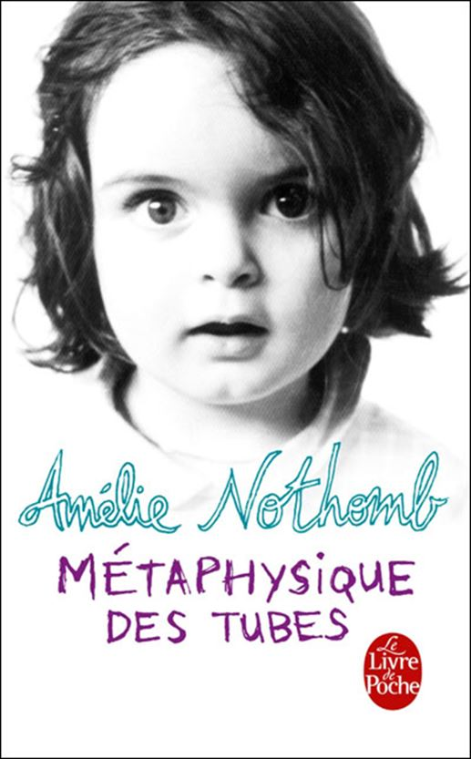
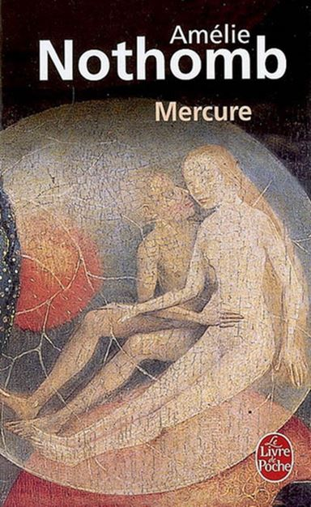
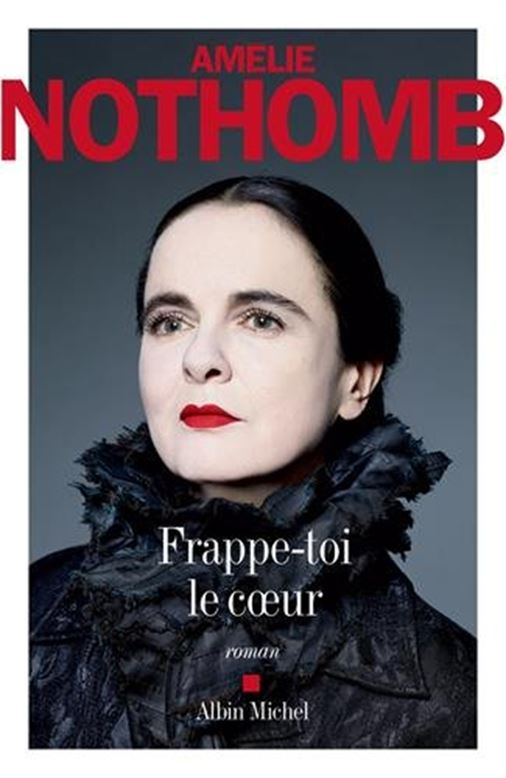
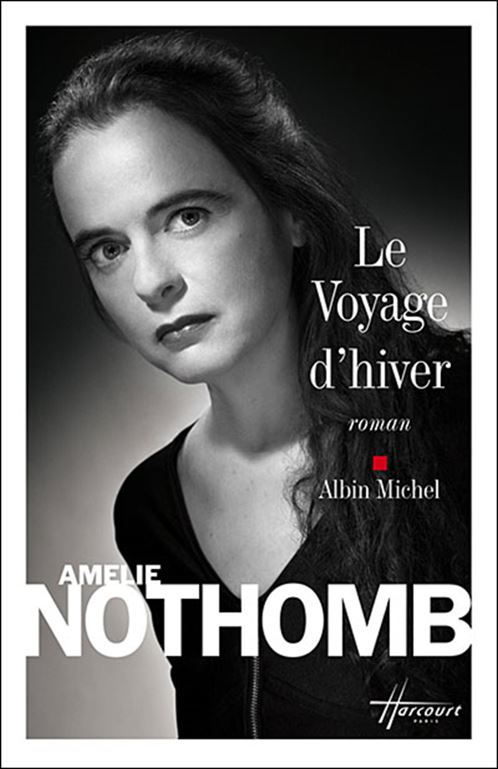
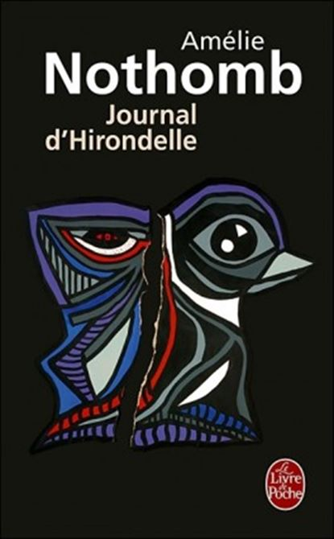
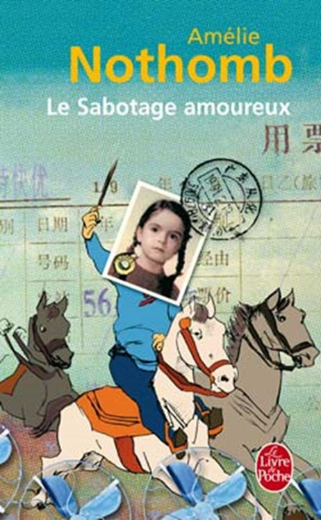
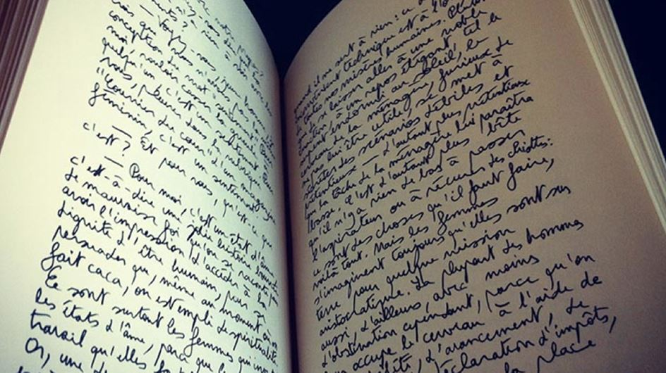
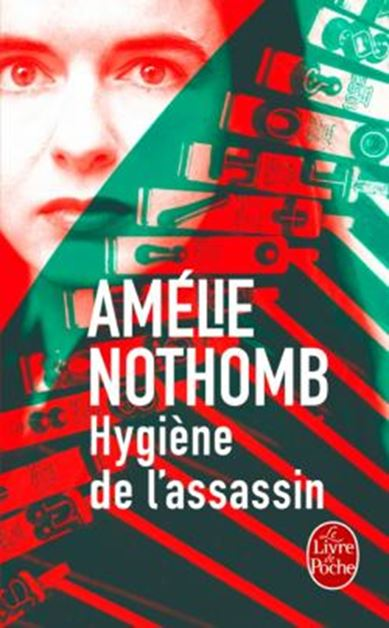

Amélie Nothomb est une exception dans la littérature moderne de langue française. J’ai lu une grande partie de ses ouvrages mais pas la totalité. Régulièrement depuis plus de vingt ans, à l’automne, l’auteur, d’origine belge, nous ravitaille en lecture. À l’époque où j’ai lu ce que je pense être les meilleurs de ses romans, je ne rédigeais pas encore de « fiches de lecture » et lorsque j’ai voulu relire La métaphysique des tubes pour en faire l’éloge, je me suis aperçu que le livre prêté, n’était plus sur son étagère... le chef-d’œuvre s’était envolé ! C’est certainement un des meilleurs écrits de Nothomb !
Il manque également dans l’article ci-dessous la critique de Stupeur et tremblements qui a obtenu le grand prix du roman de l'Académie française et le prix des libraires du Québec. Ces deux romans, avec Le sabotage amoureux, sont ceux que je considère comme les meilleurs de ceux que j’ai lu de Nothomb.
Ces trois écrits sont en grande partie autobiographiques. Sans oublier, bien entendu, La Biographie de la faim et Hygiène de l’assassin.
Si, parfois, je ne suis pas tendre dans mes opinions sur le travail de l’écrivain, cela ne veut pas dire que les ouvrages pour lesquels ma critique est sévère sont à jeter à la poubelle, loin de là ! Tous un quelque chose qui fait qu’on les lit quasiment d’une traite, et pas seulement parce qu’ils sont courts. Nothomb a toujours une poésie qui ensorcelle et qui charme. Même quand elle écrit avec paresse ou qu’elle traite de l’absurdité, comme par exemple dans Les Catilinaires (1995) Au début, on pense la description caricaturée et à la réflexion, on s’aperçoit vite que nous avons tous connu des voisins (presque) aussi encombrants.
Amélie Nothomb sait souvent tenir le lecteur en haleine. Que ce soit dans « Mercure » (1998) dans « Cosmétique de l'ennemi » (2001) ou dans « Attentat » (1997), on est tout de suite saisi. On ne l'est pas toujours par l'écriture, ni par l'intrigue qui, sans se deviner ni se laisser entrevoir n'a rien de vraiment original. Ce qui interroge, plus que ce qui fascine, chez Nothomb ce sont ses personnages qui sont indescriptibles, inclassables. Ils ne se situent véritablement ni dans le banal ni dans l'extraordinaire. Ils sont pourtant bien incarnés, ils deviennent présents au fil des pages mais restent insaisissables au lecteur. On les comprend, on les déteste ou on les aime sans trop vraiment croire à leur réalité. Ils sont un peu comme les strates du roman : incomplets.
Dans Mercure par exemple, il manque des pans entiers dans la logique du récit. L'intrigue ne tient pas debout longtemps, trop d'invraisemblances s'y succèdent. Ce qui compte pourrait-on dire alors c'est le thème, le sujet qui est développé. Dans Mercure c'est la beauté, dans Attentat c'est la laideur, à chaque fois emmenées à leur paroxysme. Malgré des arguments solides, assénés abruptement et un peu au hasard tout au long du livre, on n’a au bout du compte, ni une œuvre véritable, ni un polar bien ficelé, ni un essai. On a l'impression en lisant ces romans que l'auteur s'est volontairement abstenue de nous livrer la puissance de sa poésie, la magie qu'elle sait tirer des mots. À croire que Nothomb ne peux enchanter l'âme qu'en se racontant, qu'en décrivant l'enfance, son enfance.
On est loin dans ces romans de La métaphysique des tubes (2000) ou du Sabotage amoureux (1993). Il doit pourtant être possible de conserver cette poésie dans le récit, car la « faculté poétique » ne s'invente pas : on l'a ou on l'a pas et assurément Nothomb la possède.
***
Frappe-toi le cœur est le titre du dernier ouvrage d’Amélie Nothomb, il est sorti des presses en septembre 2017, chez Albin Michel, comme tous les ouvrages de Nothomb. C’est donc le dernier crû. Ce ne sera pas un crû inoubliable. Dans ce livre A. Nothomb traite de la jalousie des mères vis-à-vis de leurs filles et du mal être des filles de ne pas se sentir aimées par leur mère. Diane est une fille malheureuse rejetée par sa mère, Marie. Diane est la première d’une fratrie de trois. Elle souffrira silencieusement durant son enfance et son adolescence de ce manque d’amour. Elle passera par la case « je n’habite plus chez mes parents mais chez des parents de substitution », ce qui rappelle étrangement Antéchrista du même auteur, ou deux amies inséparables habitent ensemble, un conflit redoutable en naîtra. Arrivée à l’âge adulte
Diane se trouvera une mère de substitution qui se révélera aussi égoïste que sa vraie mère et qui la décevra tout autant avant de la faire souffrir. Cette mère de substitution a une vraie fille qu’elle rend malheureuse comme le fut Diane qui prend la gamine sous sa coupe. Cette fille, Mariel, assassinera sa mère et se réfugiera chez Diane. C’est une fin en queue de poisson auxquelles Amélie Nothomb nous a habitués. Nothomb donne à son héroïne une intelligence des rapports affectifs peu probable : dès l’enfance Diane comprend les affects de sa mère et l’excuse. Mais si Freud décrypta le langage des enfants, les enfants, même surdoués n’ont en général pas lu Freud à 4 ans. Reste la perception de ces choses, supposons que ce soit possible dès la petite enfance... Frappe-toi le cœur reste tout de même largement lisible, se lit d’une traite mais sans dévorer l’ouvrage.
***
Les personnages du roman d’Amélie Nothomb, Riquet à la houppe (2016) ont un air de déjà vu. Le Héros, Déodat, a deux qualités : il est très laid et très intelligent. Nothomb avait déjà traité l’archétype de la laideur dans Attentat, elle y revient ici en complétant l’histoire et en lui donnant une fin plus heureuse. Dans le précédent ouvrage sur le sujet, la fin du héros laid était assez horrible. Si ma mémoire est bonne l’archétype de la laideur se tuait.
Dans Riquet à la houppe, l’héroïne, Trémière, est par contre d’une beauté à couper le souffle ; seulement elle a un défaut : elle n’est pas très fufute... Nothomb avait également visité l’archétype de la beauté dans « Mercure ».
Dans Riquet à la houppe Nothomb durcit l’exercice esquissé dans Attentat et Mercure : à la laideur est associé l’intelligence du surdoué et à la beauté un manque de curiosité du monde.
Des mots riches dans des phrases simples qui nécessitent le dictionnaire :
« Rose avait passé de nombreux après-midi dans un grenier sardanapalesque... » p.38
Ou bien des mots simples qui fabriquent une poésie universelle :
« Il apprit à goûter ses doigts un peu salés et son oreiller que la salive rendait doux comme le lait. Quand il souhaitait plus de contrastes, il poussait dans son lange et produisait une matière tiède épaisse qui sentait fort : il en éprouvait une fierté farouche. » p.18
Reconnaissons que Freud, parlant de la même chose, ne mettait pas autant de poésie.
Ces deux personnages archétypiques vivent leur morceau de vie ordinaire, chacun de son côté, puis finissent par se rencontrer. Ils ne se marient pas et l’histoire ne dit pas s’ils eurent des enfants. Ça peut paraître niais, mais Nothomb a du métier et elle sait écrire. Ça fait 190 pages, ça n’endort pas et ça se lit en une fois.
***
Le voyage d’hiver (2009) est du Nothomb à l’état pur : des personnages improbables, plus archétypiques que des personnages de chair. Une intrigue tout aussi improbable, des situations peu plausibles et il faut articuler tout ça dans un peu probable réel. Exercice difficile, pas toujours réussi. Mais des jolies phrases, de jolis mots :
« Éprouver l’amour est déjà un tel triomphe que l’on pourrait se demander pourquoi on veut davantage. »
Un superbe clin d’œil au lecteur, en forme d’humour à la page 39 :
« J’appréciais par ailleurs qu’il n’y ait pas de photo de l’auteur sur la jaquette, en cette époque où l’on échappe de moins en moins à la bobine de l’écrivain en gros plan sur la couverture. »
Bien évidemment la photo de Nothomb prise par Harcourt illustre la première de couverture. 130 pages de plaisir, certes pas inoubliable, mais il faut savoir se faire plaisir.
***
Amélie Nothomb a eu une idée, alors elle a écrit un livre « Le fait du Prince » (2008). Mais ça ne suffit pas, elle ne s’est pas levée pour l’écrire, elle a conservé sur elle l’édredon en plumes de paresse. La seule phrase à peu-près notable se trouve en quatrième de couverture :
« Il y a un instant, entre la quinzième et la seizième gorgée de champagne, où tout homme est un aristocrate. »
Il ne faut pas désespérer, Amélie Nothomb a écrit aussi de vrais livres !
***
Un roman très court, une nouvelle plus qu’un roman, que le Journal d’Hirondelle (2006). Nothomb y parle à la première personne, c’est donc réussi. On lit d’un trait, comme un chargeur qui se vide rapidement sur ses victimes. C’est froid, glacial sans être cruel, c’est comme ça.
C’est un tueur à gages qui trouve sa voie et se livre à une succession de remarques philosophiques qui ne sont pas dénuées d’intérêt et comme ce sont des corps dont il est question, ces remarques touchent le corps :
« L’oreille est un point faible. Son absence de paupière se double d’un déficience : on entend toujours ce que l’on voudrait éviter d’entendre, mais on n’entend pas ce que l’on a besoin d’entendre »
« Quel est le point commun entre le visage et les mains ? C’est le langage, que l’un parle et les autres écrivent. J’ai le verbe froid comme la mort. »
C’est court certes, mais c’est du bon Nothomb, du fouillé, du pensé, elle est revenue souvent sur le papier pour fignoler un truc vraiment fini, même si la fin, comme d’habitude est un peu décevante.
***
Amélie Nothomb a encore eu une idée alors elle a écrit un livre « Acide sulfurique » (2005).
Mais une idée, si bonne soit-elle, ce n'est pas suffisant pour faire un roman. Pour qu'on croie aux personnages il faut qu'ils soient au moins brièvement décrits, sans aller jusqu'au regard de Legrandin dans « Du côté de chez Swann » de Proust, il en faut un minimum pour les rendre crédibles. Personnages non décrits, action impossible, pas de réalisme et fin en queue de poisson sans aucun souci de crédibilité. L'idée était pourtant très bonne, heureusement le livre est court.
***
Voilà un ouvrage, Biographie de la faim, (2004) comme tous ceux de Nothomb dans lesquels elle se raconte, qui se dévore goulûment comme un sandwich au jambon quand on a faim ! Un écrit biographique, l'auteur y raconte son enfance et son adolescence avec une non pudeur polie et bien élevée. Vous y découvrirez, entre autres, l'origine de son anorexie, décrite en des mots sobres et poignants. Un seul défaut : on reste sur sa faim, l'ouvrage est trop court. Mais avec Nothomb on devient vite boulimique !
***
Antéchrista (2003) est une fiction. Les personnages y sont solides, contrairement à ceux de ses autres fictions. Peut-être cela vient-il du fait que l'héroïne y parle à la première personne ? Histoire d'une aventure d'adolescente ou d'un incident dans l'aventure de l'adolescence ? Savoureux.
***
Péplum (1996) Avec cet ouvrage Amélie Nothomb s'essaie à la science-fiction et au fantastique en se mettant elle-même en jeu dans le roman. Elle est kidnappée par un savant du futur et un dialogue s'installe entre la romancière et le savant fou qui ne veut pas la relâcher. Hélas, la fiction n’est pas bonne et Amélie Nothomb n’a pas vraiment voulu raconter une histoire, mais comme elle parle d'elle à la première personne les meubles sont sauvés.
***
Les combustibles (1994) Une petite pièce de théâtre dans le registre sartrien. Une impression de déjà vu dans l'éternelle histoire du livre et du théâtre, mais rafraîchissant à souhait.
***
Le sabotage amoureux (1993) Quand ils écrivent comme ça, les saboteurs sont sympathiques ! Se lit d'un trait comme une bonne bière fraîche quand on a soif. On retrouve toute la fraîcheur et la force de "La métaphysique des tubes" dans ce petit roman inclassable de 124 pages. Car tout est contenu dans ces quelques feuillets : la poésie, le rêve, l'enfance, la passion. Après l'avoir lu, on passe plus de temps à s'émerveiller sur le livre que le temps qu'on a passé à le lire. Un regret cependant qui n’en est pas un : à certains passages on devine que l'auteur a fait une relecture et des corrections ; des reprises, des arrangements sur la voix enfantine ont vu le jour. Sans quoi la plupart du temps on a l'impression que la poésie coule naturellement sous la plume de l'auteur, que les métaphores enfantines surgissent spontanément de sa bouche. On se dit : « tiens, ce morceau-là, j'y reviendrai » et arrive l'autre morceau, l'autre explosion poétique, l'autre métaphore, qui font que l'âme se goinfre car elle est là pour ça...
***
Hygiène de l’assassin (1992) est le roman qui rendit célèbre Amélie Nothomb. C’est du grand Nothomb. Bien sûr l’histoire est improbable, irréaliste. On est dans un imaginaire surréaliste, nocturne, on se promène dans les archétypes, chers à l’auteur :
« Je n’ai que faire de votre permission. Vous êtes affreux, voilà, et il est incroyable d’être si affreux quand on a été si beau. » p.150.
L’héroïne, une journaliste, adresse ces propos au personnage central du roman, Prétextat Tach, qui est prix Nobel de littérature.
Bien évidemment le décor de fond étant la littérature, Nothomb nous livre ses opinions littéraires à travers les répliques des personnages. Les descriptions sont sommaires, le roman est construit presque uniquement sur les dialogues, ce qui permet de savourer dès le début les réparties des uns et des autres, surtout celles de Prétextat :
« Je pensais que tout le monde lisait comme moi ; moi, je lis comme je mange : ça ne signifie pas seulement que j’en ai besoin, ça signifie surtout que ça entre dans mes composantes et que ça les modifie. On est pas le même selon qu’on a mangé du boudin ou du caviar... » p.69
Peut-on mieux décrire l’effet de la lecture, comment les livres nous agissent ?
« Combien de fois ai-je demandé à des personnes intelligentes : « Ce livre vous-a-t-il changé ? » Et on me regardait, les yeux ronds, l’air de dire : « Pourquoi voulez-vous qu’il me change ? [...] Tenez, prenons un grand livre de beauté : Voyage au bout de la nuit. Comment ne pas être un autre après l’avoir lu ? » p.70
La trame est simple et ce n’est pas trahir que de la révéler : elle figure en quatrième de couverture ! Le prix Nobel va mourir dans deux mois et quatre journalistes sont sélectionnés pour l’interviewer. Les échanges, tout en étant vifs, seront mornes au début et deviendront pétillants avec le dernier journaliste. Chacun croit manipuler l’autre, le pousser dans ses derniers retranchements et celui qui croit pousser est poussé ! D’ennemis irrémédiables le couple écrivain-journaliste deviendra complice. Nous assistons à cette transformation, à ces retournements en nous régalant des remarques amusées de l’auteur qui fait parler ses personnages :
« Les sujets de thèses m’ont toujours amusé et attendri : c’est mignon, ces étudiants qui, pour imiter les grands, écrivent des sottises dont les titres sont hypersophistiqués et dont les contenus sont la banalité même, comme ces restaurants prétentieux qui affublent les œufs mayonnaise d’appellations grandioses. » p.94
Des réflexions sur le langage fusent à chaque page, comme si un feu d’artifice pétaradait sur nos têtes pendant qu’à l’arrière-plan, entre deux fusées qui éclatent, se déverse une pluie d’étoiles filantes :
« Le verbe le plus rare et le plus difficile : le verbe aimer. N’est-il pas amusant que nos grammaires scolaires aient choisi pour paradigme le verbe dont le sens est le plus incompréhensible ? » p.142
L’hygiène de l’assassin contient aussi des gros mots : merde, pisse et bites sont parfois utilisés, ça ne choque jamais. Non parce que le lecteur d’aujourd’hui est habitué à la grossièreté, mais parce que ces mots sont toujours employés à bon escient, sans fioriture inutile et sans précaution oratoire, ils viennent juste quand il faut ; quand un chat doit être appelé un chat. La grossièreté peut-être très subtile et Nothomb nous le prouve ; la grossièreté n’est en rien parente avec la vulgarité :
« Je suis bien de cet avis. Alors revenons à nos couilles. C’est l’organe le plus important de l’écrivain. Sans couilles un écrivain met sa plume au service de la mauvaise foi. Pour vous donner un exemple, prenons un écrivain qui a une très bonne plume, fournissons-lui de quoi écrire. Avec de solides couilles, ça donnera Mort à crédit. Sans couilles ça donnera La Nausée. » p.81
Comme Nothomb aime les mots précieux, elle nous régale également d’échanges sardanapalesques :
« Ça pue le lyrisme végétarien. [...] Juste ciel, c’est exact. Imaginez mon choc : l’intrusion brutale de cette couleur rouge et chaude au cœur de tant de lividités – l’eau glaciale, la noirceur chlorotique du lac, la blancheur des épaules de Léopoldine, ses lèvres bleues comme du sulfate de mercure, et puis surtout ses jambes dont les imperceptibles épiphanies évoquaient, par leur lenteur insondable, quelque caresse hyperboréenne. » p.179
Dire que nous avons là le meilleur ouvrage de Nothomb serait partial et l’avis pourrait changer dans une semaine ou un mois, les opinions sont inconstantes, mais nous avons assurément là un des meilleurs.
Partager cette page